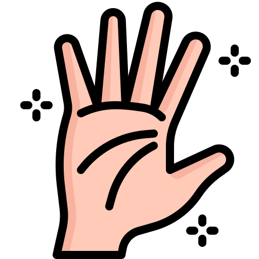

Los saludos en noruego
Nivel A1
María Roche
4 de mayo de 2025
Introducción
En esta lección aprenderás:
- Los saludos básicos en noruego.
- Cuándo y cómo usarlos.
- Su pronunciación aproximada.
- Normas culturales al saludar.

Saludar es la primera forma de mostrar respeto y cortesía.
En Noruega:
- Los saludos son breves y directos.
- El contacto visual es importante.
- No es habitual besar o abrazar al saludar a personas nuevas.
Recuerda: un saludo sencillo y un contacto visual breve son
suficientes.
Saludos esenciales
Aprende estas palabras clave:
| Español |
Noruego |
Pronunciación |
Cuándo usarlo |
| Hola |
Hei |
/haj/ |
Informal, todo el día |
| Buenos días |
God morgen |
/guːd mɔrɣen/ |
Hasta mediodía |
| Buenas tardes |
God ettermiddag |
/guːd ɛtːɛrmidɑːɡ/ |
Hasta las 18:00 |
| Buenas noches |
God kveld |
/guːd kvelː/ |
Desde las 18:00 |
Si no sabes qué usar, “Hei” funciona en casi cualquier situación
informal.
Despedidas básicas
Cuando termines una conversación, usa estas palabras:
| Español |
Noruego |
Pronunciación |
Uso |
| Adiós |
Ha det |
/hɑ deː/ |
Despedida informal |
| Hasta luego |
Vi ses |
/viː seːs/ |
Entre amigos |
“Ha det” es suficiente en la mayoría de casos. “Vi ses” significa
literalmente “Nos vemos”.
Práctica guiada
Di en voz alta el saludo correcto en estas situaciones:
- Llegas por la mañana a clase.
- Te encuentras con un amigo a las 5 de la tarde.
- Te despides de una amiga al salir.
Responde mentalmente o en voz alta.

Soluciones
- God morgen
- Hei o God ettermiddag
- Ha det o Vi ses
Repite cada saludo tres veces en voz alta.
Contexto cultural
Al saludar en Noruega:
- Mira brevemente a los ojos.
- Sonríe suavemente (no de manera exagerada).
- No uses besos o abrazos con personas que acabas de conocer.
- Apretón de manos solo en situaciones formales.

Ejemplo práctico
Un saludo corto entre dos personas podría ser así:
A: Hei!
B: Hei! God morgen!
A: God morgen!
Simple, cordial y directo.
Intenta repetir el diálogo imitando los sonidos.
Resumen
- Usa Hei en contextos informales.
- Ajusta el saludo según la hora: God morgen, God
ettermiddag, God kveld.
- Despídete con Ha det o Vi ses.
- Mantén contacto visual breve.
Actividad final
Practica saludos con alguien o frente al espejo:
- Saluda al llegar (Hei o God morgen).
- Despídete al irte (Ha det o Vi ses).
- Repite cada saludo al menos tres veces en voz alta.
Si puedes, grábate y escucha tu pronunciación.
Takk
Ya conoces los saludos básicos en noruego.
Velkommen til Norge!